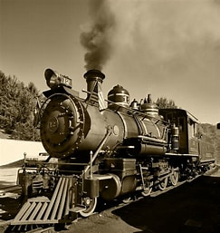
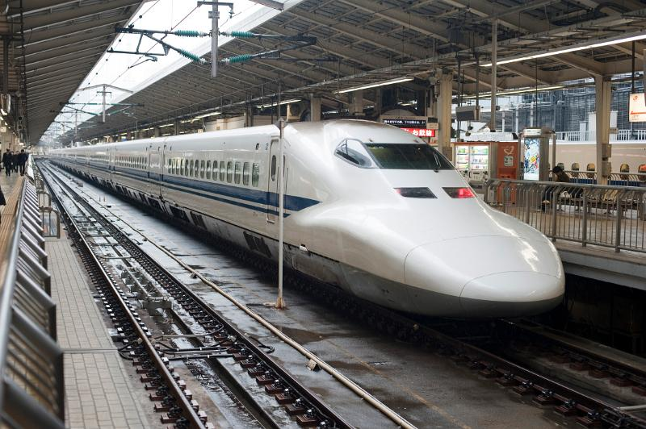

Trains have come a long way since their early models. Most to all of us have certainly seen a train or a movie that contains a train. Trains were and still are a staple of travel and transport in several countries. The common thought when thinking about trains here in Columbia, SC is a mild to major inconvenience.
Trains can be quite wonderful when you ride in them though. They provide a comfortable way of travel by land. While on the train, you could take a nap, eat a snack, catch up on those pesky emails, or watch a movie that takes place on a train. Trains can be quite relaxing when you ride on them.
 | Train Type | Fun fact |
|---|---|
| Steam Engine | A popular train taught in History classes. |
| Bullet Train | This is one of the fastest types of trains in the world |
| Snowpiercer | This is a fictional train, but it is a good dystopian film. (I wish there was a second one...) |